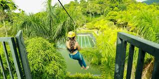
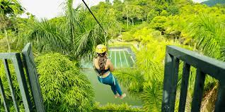

A perfect blend of the Malayali, the Tamil, and various tribal cultures is found in the Idukki district. The temples and other older buildings in the High Range and the surrounding regions in Idukki have significant influences from the medieval era Tamil-Pandyan architectural styles. The mountain passes like Bodinayakkanur (connecting various mountain ranges) and Cumbum (which connects the eastern Tamil country with Thodupuzha) have facilitated trade and travel between the Tamil-Pandyan country which lied to east of the Western Ghats and various Kerala kingdoms west of it during the medieval period.Periyar, the longest river in Kerala, has its source of origin and major portion of its route of flow, in the Idukki district. Pamba, the third-longest river in Kerala, also has its origin in the district of Idukki.
Let's see some views in Idukki

 
